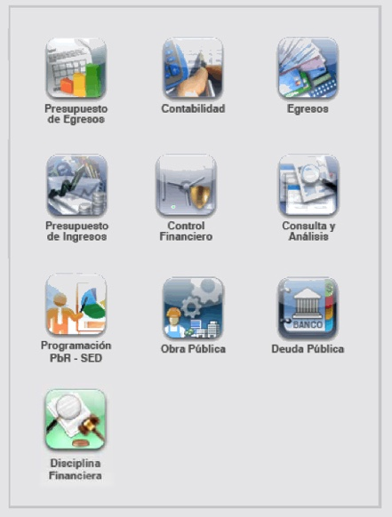
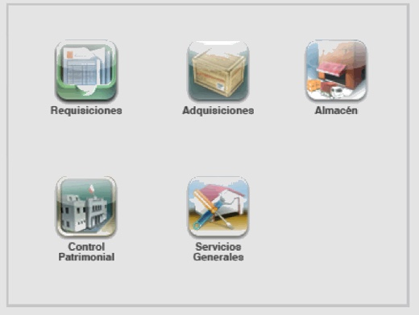

El éxito de esta tecnología radica en que es un sistema integrado de información contable y administrativa que brinda procesos y mecanismos integrales para la armonización de los sistemas contables, presupuestales y patrimoniales del ente público en los términos que establece la Ley General de Contabilidad Gubernamental (LGCG) y asegurando el cumplimiento de los ordenamientos que ha emitido el Consejo Nacional de Armonización Contable (CONAC).
Con EMPRESS GRP se optimizan los recursos y se da transparencia a las acciones de gobierno, facilitando la rendición de cuentas, permitiendo que se mejore la gestión pública en general y dando cumplimiento cabal a las demandas ciudadanas de contar con entes públicos más eficientes y transparentes.
Los Paquetes Modulares EMPRESS GRP se pueden implantar escalonadamente, según las necesidades del ente público:
Con este paquete se dispone de información de carácter contable de manera oportuna, actualizada y confiable, lo que permite que la toma de decisiones se encamine a mejorar las finanzas del ente público, la mejor herramienta para:
EMPRESS GRP Recursos Financieros incluye diez módulos:
Recursos financieros
Este es un paquete de sistemas que permite ejercer un estricto control sobre los recursos materiales, con afectaciones en línea al control presupuestal, al proceso de egresos y al registro contable, su implantación es la mejor herramienta para:
EMPRESS GRP Recursos Materiales incluye cinco módulos:
Recursos materiales
La implantación de los dos sistemas que conforman esta plataforma constituye el mejor aliado para la administración de los recursos humanos, ofreciendo los mecanismos necesarios para la captura de incidencias de movimientos de personal, la emisión de nóminas con afectación a la contabilidad y al presupuesto de egresos, el pago de las nóminas vía cheque, efectivo o transferencia electrónica, el timbrado de nóminas emitidas; así como el registro y control de asistencia de personal mediante la utilización de dispositivos biométricos.
Mediante estos módulos el ente público realiza el pago de nóminas a sus empleados, cubriendo otras funcionalidades que a continuación se enlistan:
Recursos humanos
Modelo clave de administración, seguridad y control de los sistemas y de la información
Con el Módulo Administración y Seguridad de Sistemas EMPRESS se configuran los parámetros de operación y funcionalidad de los diferentes módulos del sistema, tales como:
Los Sistemas y Tecnología EMPRESS ofrecen plena seguridad para administrar y controlar los accesos al sistema del ente público. El personal administrativo utiliza el sistema mediante un perfil de usuario que será asignado por el administrador del sistema.
Desarrollos tecnológicos complementarios que detonan sinergias para mejorar la prestación de los servicios públicos para la ciudadanía.
Conocedores de las importantes necesidades que viven los entes públicos en el ámbito de la administración y atención ciudadana, EMPRESS ofrece un amplio abanico de tecnologías y sistemas de administración, información y comunicación para la gestión diaria de diversos procesos:
Nuestra tecnología constituye una muy poderosa herramienta de información para la toma de decisiones y para el mejoramiento de la función pública de los Ayuntamientos.
Nuestro sistema conjunta contundentes beneficios para la gestión y el control catastral, porque incorpora nuevas capas de información a la base de datos catastral para enriquecerla e instrumentar sistemas automatizados para su actualización, fortaleciendo la administración de la propiedad inmobiliaria mediante el oportuno y correcto registro de los movimientos catastrales y la permanente actualización del inventario de los bienes raíces del territorio municipal. Con EMPRESS Control Catastral se facilita de manera muy importante la prestación de los servicios públicos para la recaudación de ingresos.
La implementación de sistemas automatizados en las áreas de Seguridad Pública y Vialidad en un municipio representa un factor decisivo para las acciones de mejoramiento que emprendan los Ayuntamientos en este importante rubro de los servicios públicos.
Con EMPRESS Vialidad se eleva la calidad de los servicios a la ciudadanía, integrando nuestro moderno esquema de control y el registro de incidencias en Vialidad. Nuestra tecnología fortalece las acciones que los tres niveles de gobierno realizan para elevar el nivel de seguridad de la ciudadanía en general. La gran particularidad de EMPRESS Vialidad es que se integra a otros procesos y sistemas que operan en otras corporaciones y que tienen cobertura estatal y nacional, permite establecer un estricto control de las infracciones al Reglamento de Tránsito y Vialidad y agiliza los procesos de registro y control de accidentes.
Con esta tecnología, la Tesorería Municipal puede eficientar de manera importante sus tareas de recaudación y garantizar que las obligaciones fiscales de los contribuyentes sean cubiertas correcta y oportunamente, conforme lo especificado en la reglamentación aplicable, a través del establecimiento de padrones y el registro histórico de movimientos y adeudos.
Nuestro sistema permite integrar una base de datos de todos los contribuyentes enmarcados en la Ley de Hacienda Municipal para atenderlos de forma ágil y oportuna en la realización de sus pagos y trámites; elevando los niveles de recaudación de ingresos por medio de la ampliación de la base de contribuyentes y la instrumentación de procesos de fiscalización a contribuyentes.
EMPRESS Ingresos incluye dieciocho módulos:
Nuestra tecnología permite que los Ayuntamientos establezcan un estricto control sobre los diferentes trámites y servicios que presta el área de desarrollo urbano. Sus cualidades permiten que se pueda actualizar y dar uso de la información catastral, vinculándola directamente con los sistemas de recaudación implementados en la Tesorería Municipal. Toda la información que posee esta área registral, en materia de vocación de suelo, se alimenta a la base de datos, permitiendo proporcionar información a través del sistema, para atender trámites referentes al ordenamiento urbano.
La singularidad de este módulo radica en constituirse en un detonador para fomentar el desarrollo económico, haciendo uso de las herramientas para proporcionar los servicios necesarios para la expedición de licencias de funcionamiento en los términos y condiciones que establece la normatividad aplicable al municipio, mediante la utilización de la información alimentada en EMPRESS Control Catastral y la interacción con los sistemas.
El abanico de Soluciones EMPRESS dispone de paquetes adicionales que las entidades pueden añadir para complementar las necesidades de la gestión, corriendo todas éstas también sobre Internet; integrándose plenamente con las demás plataformas de la Tecnología EMPRESS que ya se dispongan para la administración, la contabilidad y el manejo de las finanzas.
EMPRESS Sistemas Web incluye los siguientes sistemas:
Esta plataforma garantiza transacciones seguras, ya que cuenta con los parámetros de encriptación de datos requeridos a través del uso de certificados de seguridad SSL. Nuestro sistema mejora la prestación de los servicios de pagos de los contribuyentes promoviendo así que se incremente la recaudación de ingresos por concepto de:
Esta plataforma es el medio idóneo para que los contribuyentes municipales:
Es la mejor tecnología para el aliento a la participación de las empresas locales; a través de un proceso ágil, transparente y equitativo.
Al ente público le permite realizar las adquisiciones de los bienes que las diferentes áreas de la administración requieren, operando conjuntamente con EMPRESS GRP Recursos Materiales: Requisiciones y Adquisiciones, agilizando y haciendo eficiente la adquisición y suministro de bienes a las áreas del ente y fortaleciendo contundentemente la transparencia del ejercicio del gasto público.
Con esta herramienta los proveedores pueden, de manera paralela, consultar las requisiciones de materiales que se solicitan y hacer sus ofertas de productos y precios desde la comodidad de sus oficinas.
Esta tecnología permite a los usuarios remotos acceder a la información catastral a través de internet, satisfaciendo las necesidades de información de usuarios regulares o permanentes que representan la mayor parte de la demanda de servicios registrales, como lo pueden ser las notarías, las inmobiliarias o las dependencias oficiales ligadas a la administración de la propiedad.
Con esta herramienta inteligente se eficientan los servicios que ofrece el área de desarrollo urbano a la ciudadanía, permitiendo el acceso en línea a toda la información alfanumérica de Desarrollo Urbano alimentada en la plataforma. Nuestro módulo complementa la plataforma de sistemas necesarios para apoyar la gestión de trámites que se procesan en materia de desarrollo urbano, basado en la consulta de la base de datos catastral.
Permite el acceso a través de internet a la información necesaria para la expedición de licencias de funcionamiento para la apertura de empresas, en los términos y condiciones que establece la normatividad aplicable al municipio. Fomenta el desarrollo económico del municipio y brinda un mejor servicio a la ciudadanía.